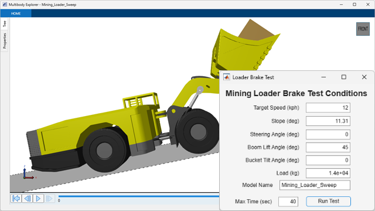
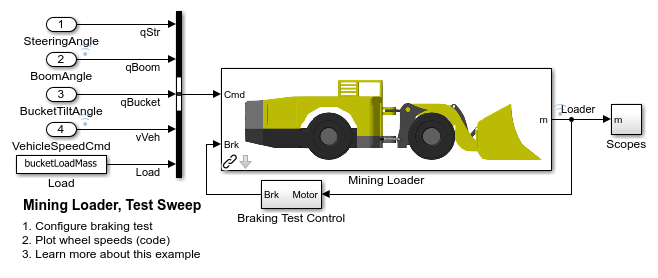
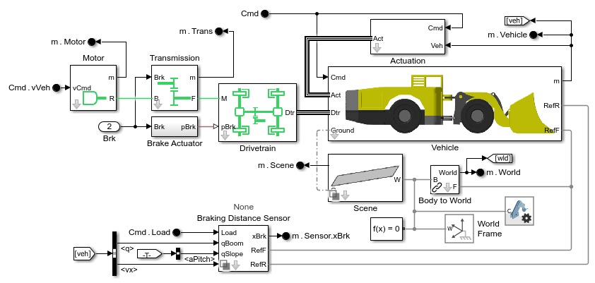
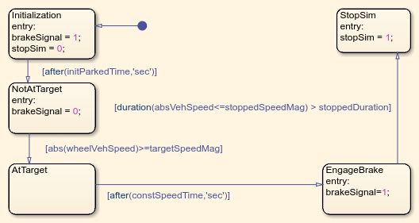
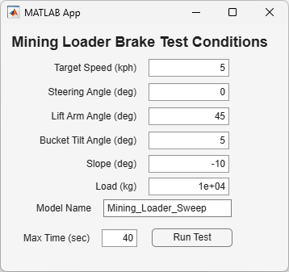
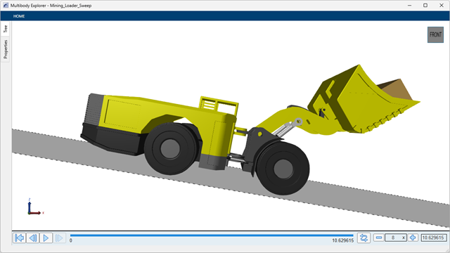
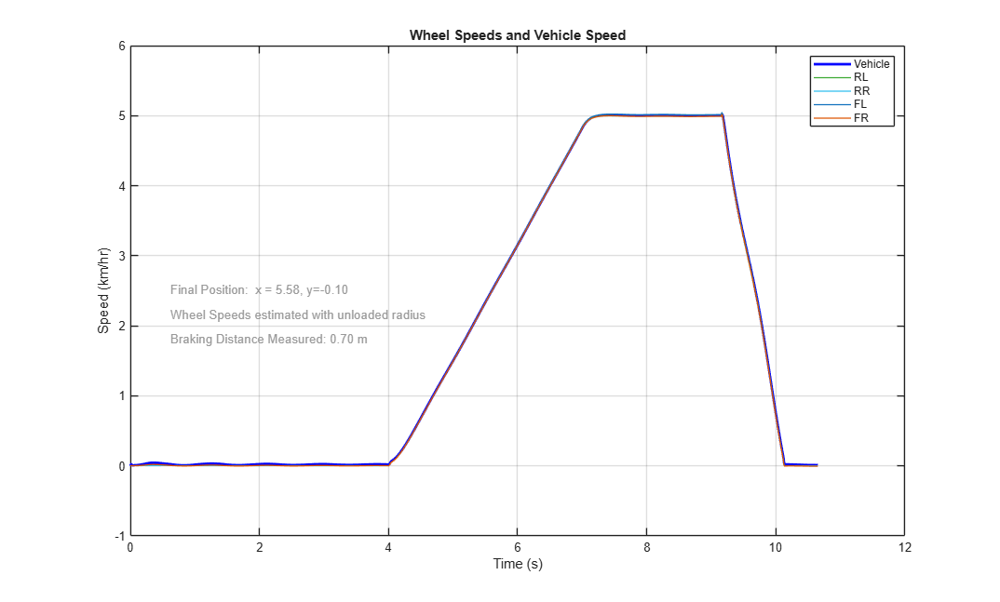
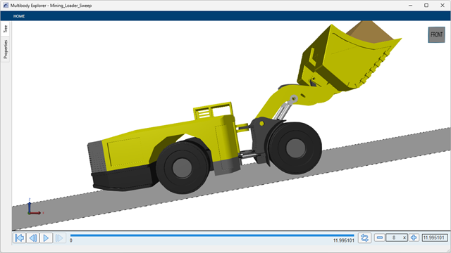
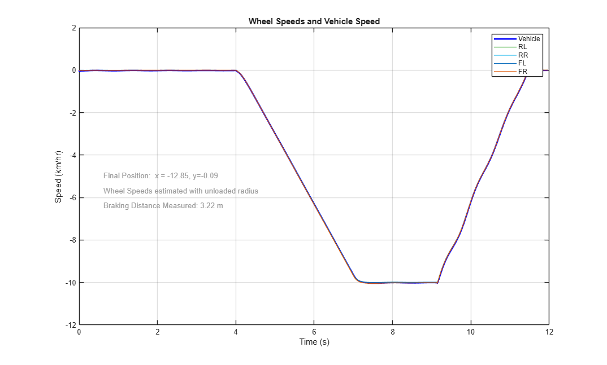

Create Virtual Test with Performance Metrics

Contents
Overview
This example defines a braking test for a mining loader. The braking distance is obtained via post processing. The purpose of this test is to generate training data for an AI surrogate model that can estimate the braking distance based on current vehicle conditions. The test is parameterized so that the conditions of the test can be varied:
- Vehicle Speed
- Boom Angle
- Bucket Load
- Surface Slope
The code used to create this documentation is here: vrt_brk_define_test.m
(return to Mining Loader Design with Simscape Overview)
Open and Configure Model
The vehicle model is created using Simscape. Inputs from the workspace configure the test conditions. A simple state machine applies the brakes to assess braking distance

Mining Loader Model
The mining loader model consists of the actuation system, powertrain, and the vehicle chassis with the implement. The surface upon which the vehicle drives can be selected as well. For the braking test, a flat slope with a parameterized incline is selected.

Braking Test Controller
The test sequence specifies when the brakes will be applied.
- Initialization : Loader settles onto surface
- NotAtTarget : Loader accelerates to target speed
- AtTarget : Loader settles at target speed
- EngageBrake : Brakes are applied
- StopSim : Loader speed is below threshold for long enough period of time

Simulation Results: Braking Test 1
The test conditions can be defined using a MATLAB App.

The app calls a function that configures inputs and parameters for the braking test. Pressing button "Run Test"
- Echoes the command to the MATLAB Command window
- Runs the command to configure the test
- Runs the simulation
- Processes the results and creates a plot with the braking distance


Simulation Results: Braking Test 2
We increase the load, switch to reverse, and switch the slope for our second test.

